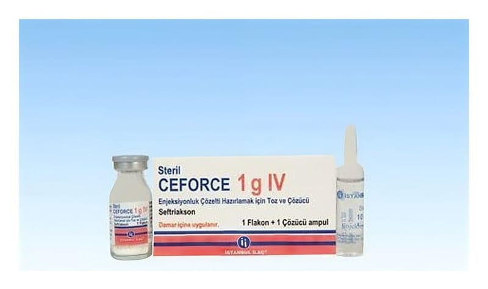

Ceforce 1 g IV Enjeksiyonluk Çözelti Hazırlamak İçin Toz Ve Çözücü, 1 Adet flakon+1 Adet Çözücü Ampul

Ne için kullanılır
KT · Bölüm 1CEFORCE, seftriakson adı verilen etkin maddeyi içermektedir. Bu, antibiyotikler adı verilen ilaç grubuna dahildir. CEFORCE etkisini bakterilerin tam olarak gelişimini durdurarak göstermektedir. Bu da bakterilerin ölmesine yol açmaktadır.
CEFORCE krem renkli akıcı toz içermektedir. Cam flakonlarda takdim edilir. Her bir karton kutuda 1 adet flakon ve 10 ml’lik enjeksiyonluk su içeren 1 adet çözücü ampul bulunmaktadır. CEFORCE bakterilerin yol açtığı ve vücudun çeşitli kısımlarındaki çeşitli enfeksiyonların tedavisinde kullanılır.
CEFORCE aşağıda belirtilen hastalıklar için kullanılabilir. Sepsis (bakterilerin kana geçmesi sonucunda ateş ve titremeye neden olan hastalık) Beyin zarı iltihabı (menenjit), Kene yoluyla bulaşan bir hastalık olan dissemine Lyme borreliosis’in erken ve geç evrelerinde Karın bölgesi (abdominal) enfeksiyonlar (karın zarı iltihabı, safra ve mide- bağırsak sistemi enfeksiyonları) Kemik, eklem, yumuşak doku, cilt ve yara enfeksiyonları, Bağışıklık sistemi bozukluğuna bağlı enfeksiyonlar, Böbrek ve idrar yolları enfeksiyonları, Solunum yolları enfeksiyonları, özellikle pnömoni (bir tür akciğer enfeksiyonu), kulak- burun-boğaz enfeksiyonları, akut bakteriyel komplike olmayan otitis media (orta kulak iltihabı) Cinsel yoldan bulaşan bir enfeksiyon olan gonore (bel soğukluğu) dahil olmak üzere genital enfeksiyonlar, Enfeksiyonların oluşmasını önlemek için, ameliyatlardan önce.